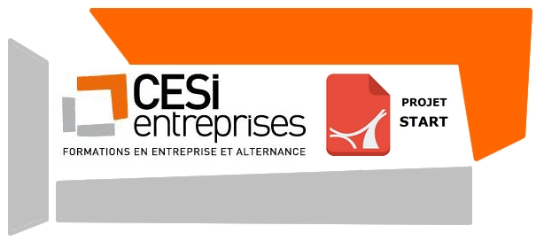
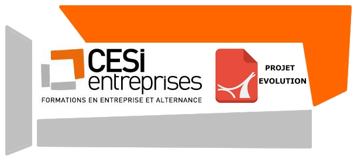

|  |
Le contexte de ce projet était que notre entreprise venait d'acquérir un nouveau site en vu d'un prochain déménagement, composé de 3 bâtiments. Nous travaillons dans le service informatique en tant que technicien, et notre mission est donc d'équiper les nouveaux locaux en postes informatiques et de prévoir donc le câblage correspondant. 

|
|  |
Ce projet fait suite au projet START, notre service s'est donc installé sur le nouveau site depuis maintenant 6 mois, notre entreprise désire donc améliorer les pratiques. Ici il faudra installer un serveur afin de gérer le parc informatique ainsi que les comptes utilisateurs.
|